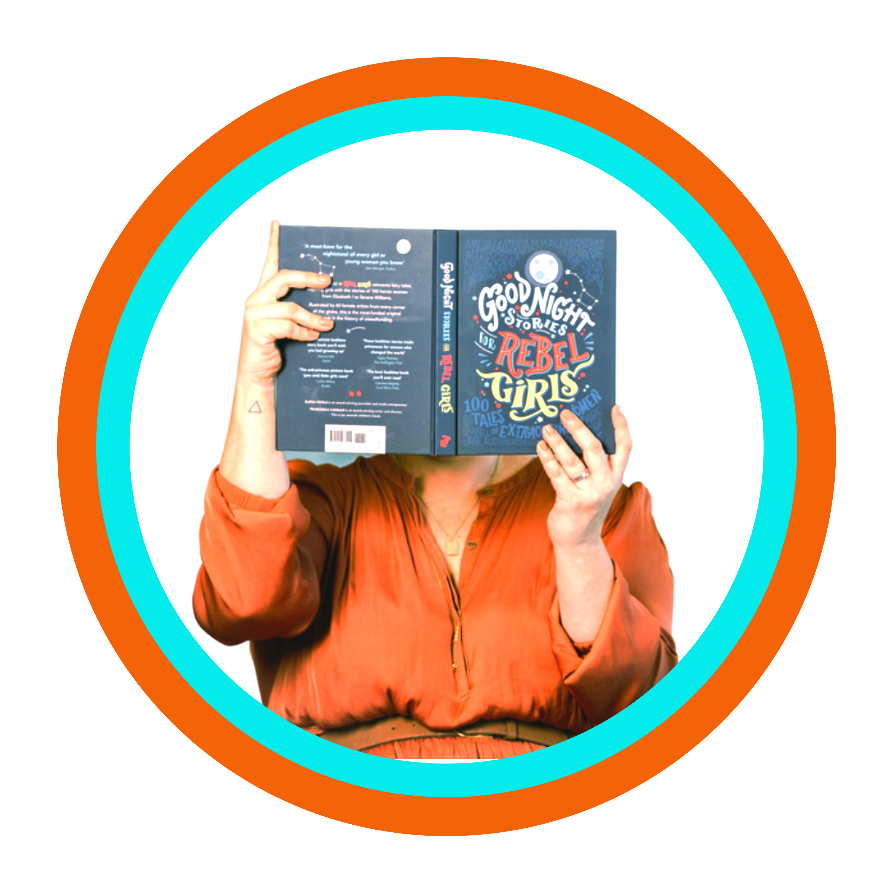

<!doctype html>
<html lang="en">
    </html>
    <head>
        <meta charset="utf-8">
        <title>This. Is. Me</title>
        <meta name="description" content="Stalk Much?">
        <meta name="author" content="AC in the house">
        <link rel="stylesheet" href="styles.css">
    </head>
    <body>
        <!-- the content for our webpage will go here -->
    </body>
    <header>
        <div>
        
        </div>
        <div>
            <h1>Carter & Co. </h1>
            <h2>This is me</h2>
        </div>
            <nav>
                <a href="index.html">Home</a>
                <a href="Projects.html">Projects</a>
                <a href="lady-legends.html">The 8%</a>
                <a href="about-me.html">About Me</a>
                <a href="contact.html">Contact Me</a>
            </nav>
        </header>
    <div>
        <div class="about-me-column">
            
        </div>
        <div class="about-me-column">
            <p>Fun Facts:</p>
            <ul>
            <li>I love growing fruit and vegetables</li>
            <li>I married a ginger man (voluntarily)</li>
            <li>I hate coriander</li>
            <li>I love people who love what they do</li>
        </ul>
    </div>
        <div>
        <p>
            Hi! Im Abby.<br/>
            <br/>
            I dig strategy, business developement and authenic branding.
            <br/>
            I am a sucker for a slogan, particularly if that slogan supports small business or prompts discussion and debate. 
            I am a change advocate. A climate change believer and a sustainability enthusiast.
            I could listen to passionate people talk about 'their jam' all day everyday. 
            <br/>
            I believe in growth - in all aspects of personal and professional life and I understand growth and change can be unnerving.
            The older I get, the more I try to steer away from what is black or white - because the real magic is in conversations, found in the grey area in between. 
            If you want to disrupt, innovate, and find funding or partnerships - then I am in your corner. 
            <br/>
            I have always sought more than incremental change in all I have set out to achieve
            I am a passionate advocate of small businesses, regional development and innovations that support a sustainable and inclusive circular based economy, that fosters inclusivity andthe amplification of First Nations peoples.
            <br/>
            I am proud to acknowledge the Kariyarra, Ngarla and Nyamal people as the Traditional Custodians of the Port Hedland lands, where I live and work.
            <br/> 
            I extend that respect to all Aboriginal & Torres Straight Islander people of the local community and recognise their strength and resilience, their incredibly rich cultures and their continuing connection to land and waters.
            <br/>
            I pay homage to my Elders past and present through my words and actions.
            <br/>
            I am an active member of the Port Hedland and Pilbara community where I live with my family.
            <br/>
            Essentially, I love helping cool people do cool things.
            <br/>
            And if you made it this far.... thank you for being so interested! Please get in touch!
        </p>
        </div>
       
</div>
    <footer>
        Website built from scratch by an amateur coder #CarterCodes.  
    </footer>
</body>
</html>